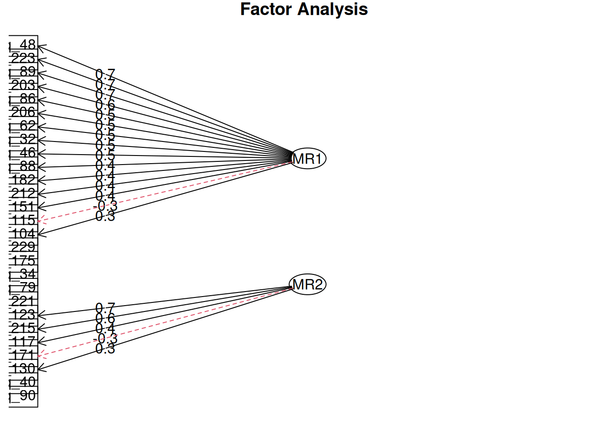
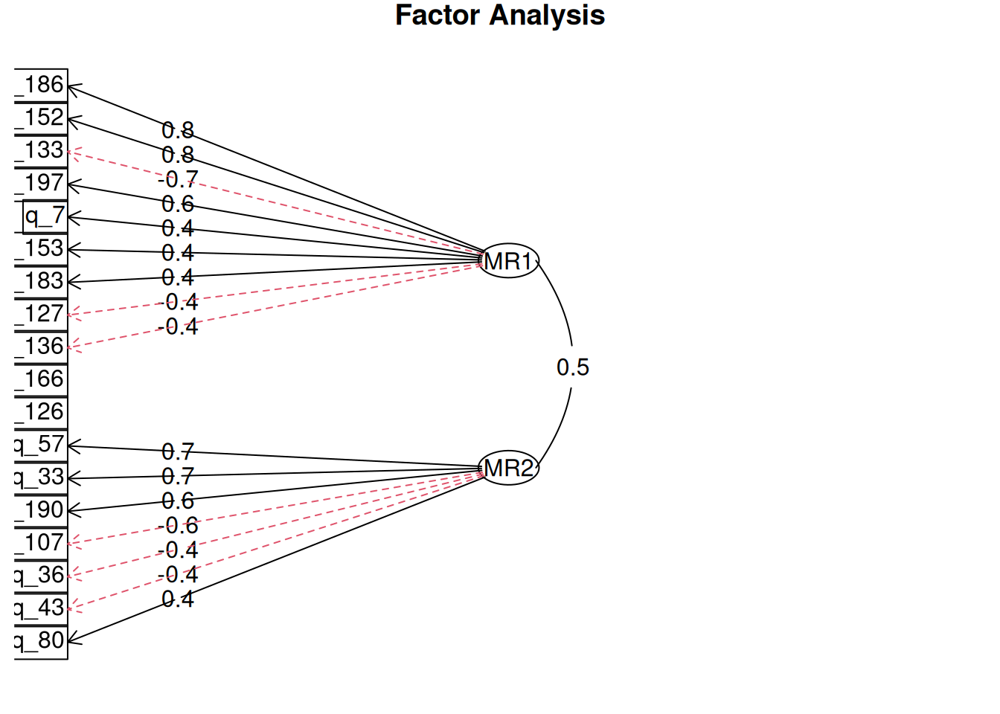
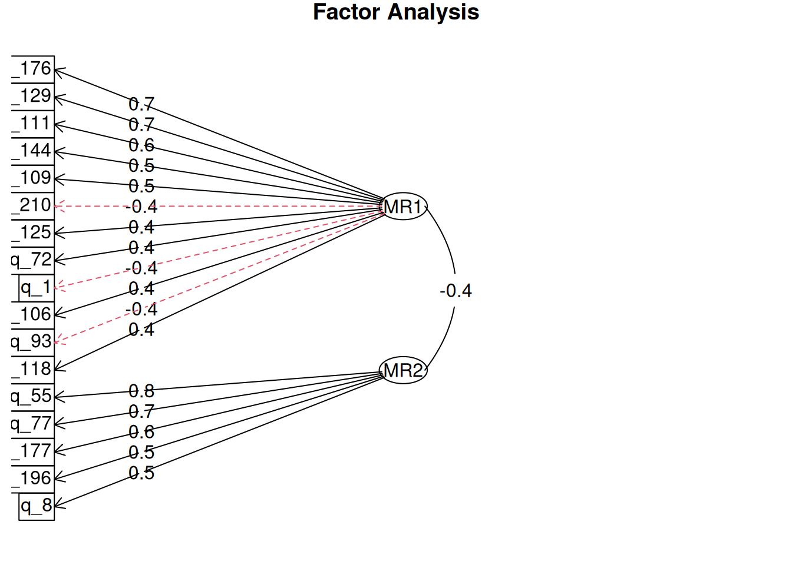

EFA
## [1] 0Размеры шкал
Основная проблема в модели на уровне с2-шкал — неравномерность шкал по количеству вопросов. Эта неравномерность вызвана тем, что от исходной модели опросника на 230 вопросов в количественном исследовании было использовано всего 137 вопросов. Остальные вопросы (и, соответственно, (суб)шкалы), было решено оценивать акачественными методами.
В результате в некоторых шкалах всего 3 вопроса, а в некоторых — до 27:
| c2 | C1 | C2 | full_model | trimmed_model | excluded |
|---|---|---|---|---|---|
| c2 | процесс терапии | альянс и сеттинг - 1 | 9 | 8 | 1 |
| c3 | процесс терапии | альянс и сеттинг - 2 | 5 | 5 | 0 |
| c5 | отношения | отношения-1 | 27 | 21 | 6 |
| c6 | отношения | отношения-2 | 17 | 12 | 5 |
| c8 | работа с изменениями | работа с изменениями | 40 | 28 | 12 |
| c9 | профессионализм | профессионализм-1 | 4 | 3 | 1 |
| c10 | профессионализм | профессионализм-2 | 18 | 18 | 0 |
| c11 | результаты | результаты | 17 | 17 | 0 |
Модель с3-шкал
Самый простой способ решить эту проблему – оценить структуру опросника на уровне дробных с3-шкал. Это помогло бы оценить вклады тех или иных вопросов, или же просто расширить количество шкал опросника.
Однако модель на 30 факторов не сходится, даже если предположить скоррелированность латентных факторов.
## lavaan 0.6-19 did NOT end normally after 6672 iterations
## ** WARNING ** Estimates below are most likely unreliable
##
## Estimator ML
## Optimization method NLMINB
## Number of model parameters 709
##
## Number of observations 563Если рассматривать каждую из 30 шкал отдельно, то видно, что есть несколько шкал, по которым даже маленькая модель сойтись не может.
| c3 | c2 | n_questions | cfi | rmsea | srmr |
|---|---|---|---|---|---|
| 3 | 2 | 4 | 0.879 | 0.169 | 0.066 |
| 5 | 2 | 5 | 0.889 | 0.154 | 0.061 |
| 8 | 3 | 5 | 0.863 | 0.2 | 0.066 |
| 12 | 5 | 2 | NA | NA | NA |
| 13 | 5 | 4 | 0.976 | 0.077 | 0.031 |
| 14 | 5 | 4 | 0.917 | 0.096 | 0.041 |
| 15 | 5 | 3 | 1 | 0 | 0 |
| 16 | 5 | 5 | 0.733 | 0.226 | 0.117 |
| 17 | 5 | 3 | 1 | 0 | 0 |
| 18 | 5 | 4 | 0.997 | 0.034 | 0.017 |
| 19 | 5 | 2 | NA | NA | NA |
| 20 | 6 | 3 | NA | NA | NA |
| 21 | 6 | 5 | 0.868 | 0.107 | 0.056 |
| 22 | 6 | 4 | NA | NA | NA |
| 23 | 6 | 5 | 0.776 | 0.111 | 0.063 |
| 25 | 8 | 5 | 0.706 | 0.134 | 0.075 |
| 26 | 8 | 5 | 0.64 | 0.175 | 0.094 |
| 27 | 8 | 5 | 0.837 | 0.086 | 0.052 |
| 28 | 8 | 4 | 0.851 | 0.111 | 0.047 |
| 29 | 8 | 5 | 0.957 | 0.089 | 0.037 |
| 30 | 8 | 4 | 0.521 | 0.261 | 0.109 |
| 31 | 8 | 7 | 0.906 | 0.122 | 0.064 |
| 32 | 8 | 5 | 0.881 | 0.069 | 0.041 |
| 36 | 9 | 4 | 0.845 | 0.2 | 0.077 |
| 37 | 10 | 6 | 0.875 | 0.132 | 0.072 |
| 38 | 10 | 6 | 0.872 | 0.114 | 0.053 |
| 39 | 10 | 6 | 0.971 | 0.064 | 0.035 |
| 40 | 11 | 5 | 0.915 | 0.145 | 0.052 |
| 41 | 11 | 6 | 0.873 | 0.103 | 0.057 |
| 42 | 11 | 6 | 0.888 | 0.127 | 0.067 |
Как правило, такое происходит в нескольких ситуациях:
- вопросы либо очень слабо, либо очень сильно скоррелированы
- есть много пропусков или недостаточно респондентов
- не учтена ситуация, когда один вопрос может в реальности относиться к нескольким факторам (кросс-нагрузки)
EFA, с3 = 5
Я попробовал переразбить вопросы шкалы с2 = 5 (отношения-1) на две субшкалы. Для этого я использовал эксплораторный факторный анализ с oblimin-вращением. Вращение нужно, что сделать структуру более интерпретабельной, а также выровнять факторы, так как без вращения первый фактор всегда забирает максимум дисперсии и, соответственно, остальные факторы меньше по количеству вопросов и менее интерпретабельны.
##
## Loadings:
## MR1 MR2
## q_40
## q_171
## q_215 0.589
## q_34
## q_130
## q_151
## q_182 0.410
## q_221
## q_89 0.652
## q_115
## q_175
## q_223 0.654
## q_62 0.480
## q_88 0.415
## q_212
## q_86 0.549
## q_90
## q_32 0.476
## q_206 0.508
## q_46 0.456
## q_48 0.657
## q_79
## q_203 0.576
## q_104
## q_117 0.409
## q_123 0.693
## q_229
##
## MR1 MR2
## SS loadings 4.125 1.556
## Proportion Var 0.153 0.058
## Cumulative Var 0.153 0.210Диаграмма, дисперсия каких вопросов каким фактором объясняется, выглядит вот так. 
Таблица вопросов с маркером объясняющего их фактора:
| C2 | c2 | c3 | q | competence_ru | question_ru | MR1 | MR2 | factor_number |
|---|---|---|---|---|---|---|---|---|
| отношения-1 | 5 | 12 | q_206 | принятие | я с уважением отношусь к личности, мировоззрению, ценностям клиента и стараюсь продемонстрировать это | 0.508 | 0.056 | 1 |
| отношения-1 | 5 | 12 | q_32 | принятие | когда я слушал(а) клиента, то смотрел(а) на него, активно поддерживая контакт | 0.476 | 0.028 | 1 |
| отношения-1 | 5 | 13 | q_223 | перефразирование и пересказ | я уточнял(а) у клиента, правильно ли я его понимаю | 0.654 | 0.011 | 1 |
| отношения-1 | 5 | 13 | q_89 | перефразирование и пересказ | я использовал(а) перефразирование, чтобы убедиться, что правильно понимаю клиента | 0.652 | -0.045 | 1 |
| отношения-1 | 5 | 15 | q_62 | поддержка | я говорил(а) клиентам слова одобрения и поддержки в процессе работы | 0.480 | 0.063 | 1 |
| отношения-1 | 5 | 15 | q_88 | поддержка | я использовал(а) невербальные способы поддержки клиента | 0.415 | -0.079 | 1 |
| отношения-1 | 5 | 16 | q_182 | невербальные навыки | я подстраивался(лась) под позу, тембр и манеру речи клиента | 0.410 | -0.177 | 1 |
| отношения-1 | 5 | 18 | q_203 | резюмирование | я резюмировал(а) слова клиента | 0.576 | 0.036 | 1 |
| отношения-1 | 5 | 18 | q_46 | резюмирование | по следам рассказа клиента я обобщал(а) суть его переживаний и размышлений | 0.456 | -0.024 | 1 |
| отношения-1 | 5 | 18 | q_48 | резюмирование | после рассказа клиента я кратко резюмировал(а) ему суть сказанного | 0.657 | 0.076 | 1 |
| отношения-1 | 5 | 19 | q_86 | понятность | я использовал(а) метафоры и аналогии, чтобы клиенту было понятнее, что я имел(а) в виду | 0.549 | -0.046 | 1 |
| отношения-1 | 5 | 14 | q_117 | эмпатия | я не называл(а) чувства клиента, он сам должен осознавать и называть их | 0.027 | 0.409 | 2 |
| отношения-1 | 5 | 14 | q_123 | эмпатия | я не отзеркаливал(а) чувства клиента, чтобы не вовлечься в его переживания и быть в состоянии помочь ему | -0.007 | 0.693 | 2 |
| отношения-1 | 5 | 17 | q_215 | конгруэнтность | я старался(лась) не показывать клиенту свои чувства, возникающие в процессе терапии | 0.059 | 0.589 | 2 |
| отношения-1 | 5 | 13 | q_115 | перефразирование и пересказ | я не использовал(а) перефразирование | -0.344 | 0.219 | NA |
| отношения-1 | 5 | 13 | q_175 | перефразирование и пересказ | я повторял(а) сказанное словами клиента | 0.267 | -0.195 | NA |
| отношения-1 | 5 | 14 | q_104 | эмпатия | я называл(а) чувства, переживаемые клиентом | 0.323 | -0.093 | NA |
| отношения-1 | 5 | 14 | q_229 | эмпатия | я часто испытывал(а) теплые чувства и заботу по отношению к клиенту | 0.294 | -0.090 | NA |
| отношения-1 | 5 | 15 | q_212 | поддержка | я спрашивал(а) клиента о том, комфортно ли ему во время сессии | 0.397 | 0.244 | NA |
| отношения-1 | 5 | 16 | q_130 | невербальные навыки | я не подстраивался(лась) под позу и манеру речи клиента | -0.180 | 0.310 | NA |
| отношения-1 | 5 | 16 | q_151 | невербальные навыки | я обращал(а) большое внимание на невербальные проявления клиента | 0.395 | -0.056 | NA |
| отношения-1 | 5 | 16 | q_221 | невербальные навыки | я уделял(а) внимание смыслу сказанного клиентом, а не его невербальным проявлениям | -0.167 | 0.151 | NA |
| отношения-1 | 5 | 16 | q_34 | невербальные навыки | мне было трудно удерживать зрительный контакт с клиентом, это отвлекало от сути нашей беседы | -0.251 | 0.092 | NA |
| отношения-1 | 5 | 17 | q_171 | конгруэнтность | я открыто делился своими чувствами с клиентом во время сессии | 0.185 | -0.340 | NA |
| отношения-1 | 5 | 17 | q_40 | конгруэнтность | на вопросы клиента о моих чувствах я давал(а) честный ответ, даже если это могло задеть его | 0.151 | -0.167 | NA |
| отношения-1 | 5 | 18 | q_79 | резюмирование | я избегал(а) переспрашиваний в процессе работы | -0.236 | 0.211 | NA |
| отношения-1 | 5 | 19 | q_90 | понятность | я использовал(а) психологические термины, чтобы завоевать доверие клиента | 0.097 | 0.150 | NA |
Вообще, большое количество вопросов, которые оказались без сильных нагрузок по первому или второму факторам, свидетельствует о том, что либо респонденты неверно понимают вопросы, либо эти вопросы служат маркерами какой-то иной компетенции.
EFA, с3 = 10
Аналогично с с2 = 10 (профессионализм) на две субшкалы.
##
## Loadings:
## MR1 MR2
## q_36 -0.413
## q_80
## q_126
## q_136
## q_183 0.407
## q_186 0.837
## q_7 0.443
## q_33 0.667
## q_43
## q_57 0.735
## q_107 -0.567
## q_190 0.602
## q_127
## q_133 -0.698
## q_152 0.802
## q_153 0.443
## q_166
## q_197 0.631
##
## MR1 MR2
## SS loadings 3.242 2.357
## Proportion Var 0.180 0.131
## Cumulative Var 0.180 0.311Диаграмма, дисперсия каких вопросов каким фактором объясняется, выглядит вот так. Связь между факторами со значением 0.5 свидетельствует от достаточно сильной корреляции факторов друг с другом. 
Таблица вопросов с маркером объясняющего их фактора:
| C2 | q | competence_ru | question_ru | MR1 | MR2 | factor_number |
|---|---|---|---|---|---|---|
| профессионализм-2 | q_133 | супервизия - личная терапия - интервизия | я не прибегаю к супервизиям/интервизиям в своей работе | -0.698 | -0.014 | 1 |
| профессионализм-2 | q_152 | супервизия - личная терапия - интервизия | я обращаюсь к интервизии и/или супервизии для рефлексии работы с клиентами | 0.802 | 0.045 | 1 |
| профессионализм-2 | q_153 | супервизия - личная терапия - интервизия | я обращаюсь к своим коллегам, чтобы обсудить возникающие в процессе консультирования проблемы (например, этические, эмоциональные и пр.) | 0.443 | 0.168 | 1 |
| профессионализм-2 | q_197 | супервизия - личная терапия - интервизия | я прохожу личную терапию для проработки собственных проблем и запросов | 0.631 | -0.140 | 1 |
| профессионализм-2 | q_183 | мотивация развиваться | я посещаю конференции и участвую в них | 0.407 | 0.148 | 1 |
| профессионализм-2 | q_186 | мотивация развиваться | я предпринимаю специальные действия для профилактики эмоционального выгорания (супервизии, личная терапия, интервизии, группы и т.д.) | 0.837 | -0.019 | 1 |
| профессионализм-2 | q_7 | самооценка | вне сессий я тренировал(а) свои профессиональные навыки (например, в группах, на тренингах и т.д.) | 0.443 | 0.196 | 1 |
| профессионализм-2 | q_36 | мотивация развиваться | мне не хватает времени и сил следить за исследованиями в области психологии и смежных специальностей | -0.080 | -0.413 | 2 |
| профессионализм-2 | q_107 | самооценка | я не анализировал(а) случай клиента между сессиями | 0.039 | -0.567 | 2 |
| профессионализм-2 | q_190 | самооценка | я проводил(а) самостоятельный анализ сессий, чтобы лучше разобраться в случае клиента | -0.048 | 0.602 | 2 |
| профессионализм-2 | q_33 | самооценка | между сессиями я анализировал(а) качество терапевтического альянса | 0.103 | 0.667 | 2 |
| профессионализм-2 | q_57 | самооценка | я анализировал(а) проведенные мною сессии, чтобы выявить свои зоны развития | -0.026 | 0.735 | 2 |
| профессионализм-2 | q_127 | супервизия - личная терапия - интервизия | я не ощущаю потребности в личной терапии | -0.371 | 0.264 | NA |
| профессионализм-2 | q_166 | супервизия - личная терапия - интервизия | я осваиваю новые подходы самостоятельно, не прибегая к обучению у других специалистов | -0.241 | -0.021 | NA |
| профессионализм-2 | q_126 | мотивация развиваться | я не ощущаю необходимости в курсах повышения квалификации | -0.170 | 0.053 | NA |
| профессионализм-2 | q_136 | мотивация развиваться | я не провожу профилактику эмоционального выгорания | -0.369 | -0.257 | NA |
| профессионализм-2 | q_80 | мотивация развиваться | я изучаю актуальную повестку научных событий в своей области | 0.254 | 0.364 | NA |
| профессионализм-2 | q_43 | самооценка | на сессиях я действовал(а) интуитивно, не вдаваясь в детальный анализ своей работы | -0.089 | -0.367 | NA |
| factor_number | n_questions |
|---|---|
| NA | 6 |
| 1 | 7 |
| 2 | 5 |
EFA, с3 = 11
Аналогично с с2 = 11 (результаты), попробовал разбить на две субшкалы.
##
## Loadings:
## MR1 MR2
## q_8 0.459
## q_72 0.402
## q_93
## q_111 0.603
## q_144 0.538
## q_196 0.494
## q_55 0.783
## q_77 0.733
## q_106
## q_118
## q_125 0.414
## q_177 0.587
## q_1
## q_109 0.458
## q_129 0.663
## q_176 0.749
## q_210 -0.416
##
## MR1 MR2
## SS loadings 2.948 2.315
## Proportion Var 0.173 0.136
## Cumulative Var 0.173 0.310Диаграмма, дисперсия каких вопросов каким фактором объясняется, выглядит вот так. Связь между факторами со значением -0.4 свидетельствует от достаточно сильной отрицательной корреляции. 
Таблица вопросов с маркером объясняющего их фактора:
| C2 | q | competence_ru | question_ru | MR1 | MR2 | factor_number |
|---|---|---|---|---|---|---|
| результаты | q_109 | резюмирование сессии и результатов терапии c клиентом | я не выделял(а) значимые моменты сессии для клиента, поскольку он сам запоминает самое важное | 0.458 | -0.082 | 1 |
| результаты | q_129 | резюмирование сессии и результатов терапии c клиентом | я не подводил(а) итогов на сессии | 0.663 | 0.009 | 1 |
| результаты | q_176 | резюмирование сессии и результатов терапии c клиентом | я подводил(а) итог сессии, только если об этом просил клиент | 0.749 | 0.126 | 1 |
| результаты | q_210 | резюмирование сессии и результатов терапии c клиентом | я специально оставлял(а) время в конце сессии для подведения итогов | -0.416 | 0.250 | 1 |
| результаты | q_111 | оценка результатов | я не задавал(а) клиенту вопросы про результаты терапии, так как, когда они появятся, это станет само собой заметно | 0.603 | -0.028 | 1 |
| результаты | q_144 | оценка результатов | я не тратил(а) время сессии на оценку промежуточных результатов | 0.538 | -0.010 | 1 |
| результаты | q_72 | оценка результатов | я ждал(а) полного решения проблемы, чтобы вместе с клиентом подвести итоги работы | 0.402 | 0.034 | 1 |
| результаты | q_125 | поддержание результатов | я не отмечал(а) незначительные изменения клиента, пока проблема не была полностью решена | 0.414 | -0.093 | 1 |
| результаты | q_196 | оценка результатов | я просил(а) клиента рассказывать мне о том, как он оценивает свой прогресс | -0.172 | 0.494 | 2 |
| результаты | q_8 | оценка результатов | во время сессии я сопоставлял(а) изначальный запрос клиента и текущие результаты | -0.143 | 0.459 | 2 |
| результаты | q_177 | поддержание результатов | я поддерживал(а) в клиенте ощущение веры в свою способность достичь цели, напоминая о его предыдущих успехах | -0.034 | 0.587 | 2 |
| результаты | q_55 | поддержание результатов | я акцентировал(а) внимание клиента на его достижениях | 0.084 | 0.783 | 2 |
| результаты | q_77 | поддержание результатов | я замечал(а) даже малейшие положительные изменения у клиента и говорил(а) ему о них | 0.003 | 0.733 | 2 |
| результаты | q_1 | резюмирование сессии и результатов терапии c клиентом | в конце сессии я уточнял(а) у клиента, что он считает результатом сессии | -0.375 | 0.357 | NA |
| результаты | q_93 | оценка результатов | я использовал(а) специальные инструменты для подведения промежуточных итогов (например, шкалы или вопросы) | -0.356 | 0.229 | NA |
| результаты | q_106 | поддержание результатов | я не акцентировал(а) внимание на успехах клиента и ждал(а), что он сам их заметит | 0.359 | -0.247 | NA |
| результаты | q_118 | поддержание результатов | я не обсуждал(а) с клиентом то, что уже достигнуто, а фокусировался(лась) на том, что еще не сделано | 0.352 | -0.166 | NA |
| factor_number | n_questions |
|---|---|
| NA | 4 |
| 1 | 8 |
| 2 | 5 |